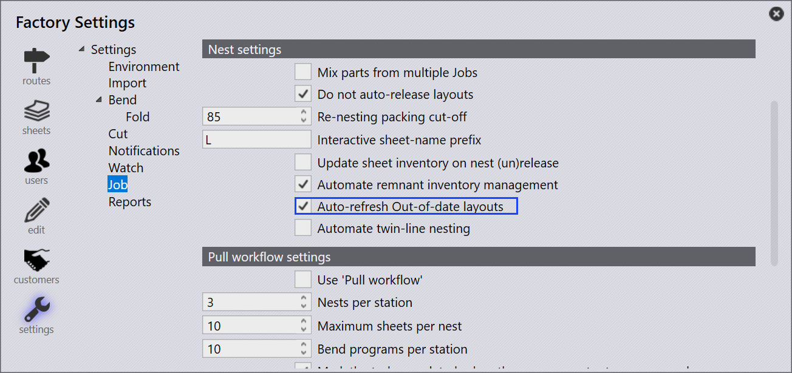
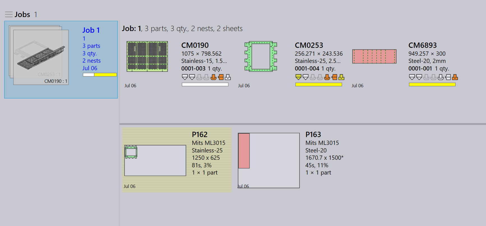
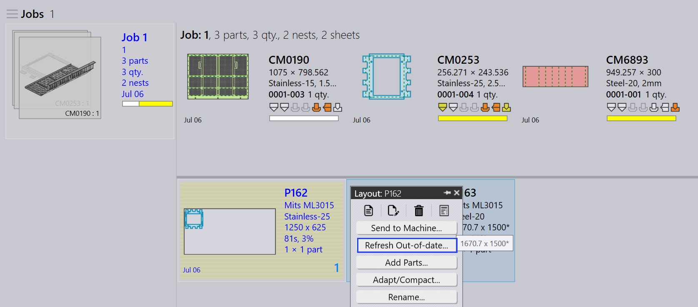

구식
이미 네스팅을 위해 보낸 부품을 편집하거나 수정하면 변경한 내용도 네스트에서 업데이트되어야 합니다. 이를 구식 레이아웃 새로 고침이라고 하며, 작업이 항상 최신 버전의 부품을 사용하도록 합니다.
-
이를 활성화하려면 공장 → 통합 작업 → 네스팅 설정*로 이동하여 *최신이 아닌 레이아웃 자동 새로고침 확인란을 선택합니다.

-
Auto-refresh Out-of-date layouts가 켜져 있으면 진행 중이거나 승인 상태인 레이아웃은 수정된 부품으로 자동으로 새로 고침됩니다. 수동 작업이 필요하지 않습니다.
-
최신이 아닌 레이아웃 자동 새로고침 확인란이 선택되지 않은 경우 네스트를 수동으로 업데이트해야 합니다.
-
통합 작업 → nests 페이지로 이동하고 Out-of-date 필터에서 *Yes*를 선택하여 이전 버전을 사용하는 모든 네스트를 찾습니다.

-
구식 네스트는 노란색으로 강조 표시됩니다.

-
강조 표시된 네스트를 마우스 오른쪽 버튼으로 클릭하고 *최신 상태로 새로 고침…*를 클릭합니다.

-
네스트가 수정된 부품으로 업데이트되고 변경 사항이 작업에 적용됩니다.